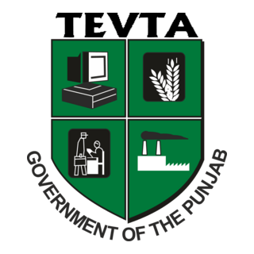

Empowering skilled youth by transforming vocational training into sustainable, market-driven opportunities.
Creative Hands is a flagship initiative of TEVTA Punjab designed to bridge the gap between vocational training and real-world markets. The initiative promotes entrepreneurship, self-reliance, and commercialization of skills developed across TEVTA institutes in Punjab.
Under her leadership, Punjab’s focus on skills, innovation, and youth empowerment has gained renewed momentum, ensuring economic inclusion and sustainable growth.
His strategic vision integrates entrepreneurship within technical education, ensuring that skill development directly contributes to employment generation and enterprise creation.

He has led TEVTA towards market alignment, enabling trainees to convert technical expertise into commercially viable products through Creative Hands.

She oversees quality assurance and effective implementation of the initiative, ensuring consistency, institutional coordination, and entrepreneurial impact.